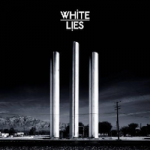
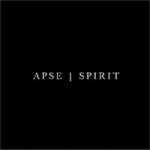
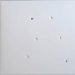

Music Reviews
-

Geskia Silent 77
Mixing organic-sounding yet assumed electronica with hip hop and technical breakbeat, Geskia stands among Minotaur Shock, Four Tet, Autechre, cLOUDDEAD and Boards of Canada as one of the leading artists in the alternative electronica genre.
Miguel Morelli reviews... -
Plush Fed
Destined to be a lost classic?
Brett Oronzio determines... -

White Lies To Lose My Life...
Could White Lies be the best British guitar band since, er, Bloc Party.
David Coleman confronts the first hyped UK release of 2009... -

Zero Boys Vicious Circle / History Of (Re-issues)
During hardcore's hey-day, while all eyes were fixated on the coasts, Indiana quartet Zero Boys cracked the country down the middle with their now classic slice of rock n' rage, Vicious Circle. Record label, Secretly Canadian, is putting Vicious Circle back into circulation, along with their unrealized follow-up History Of.
Sean Caldwell knows the big rockstar who made a lot of money... -
Remember Remember Remember Remember
Released last November, Remember Remember might not have captured the imagination of a music press more preoccupied with compiling its end of year lists than unearthing the next great Glaswegian musician, but that's not a reflection on the quality of Glasgow musician Graeme Ronald's creation.
David Coleman reviews... -

APSE Spirit
Beware the ravaging hordes!
Alan Shulman reviews... -

Animal Collective Merriweather Post Pavilion
Merriweather Post Pavilion, Animal Collective's ninth full length album, had aura to burn long before most of us heard it. Can we revel in its myriad treasures without stumbling over the pre-release hubub? Can we weigh its merit in words without quaking in the shadow of its imminent acclaim?
Tom Whalen wonders what we talk about when we talk about Animal Collective... -
My Dear Disco DanceThink LP
Ann Arbor's very own dance band's latest release is ambitious, but If you're into house, disco, and electronica, you could probably do better elsewhere.
Kevin Walker searches for his disco ball... -
Clipse Road To Till The Casket Drops
2008 was a tough year for hip-hop. Thankfully, Clipse wrap a small promise of greatness in a self-aggrandizing, mixtape/advertisement end-of-the-year package, and gracefully offer it up for immediate download.
Kevin Walker freely downloads... -

The Muslims The Muslims
What's in a name? Don't worry about it; pay more attention to the music.
Kevin Walker reviews a record (not Islamists)...